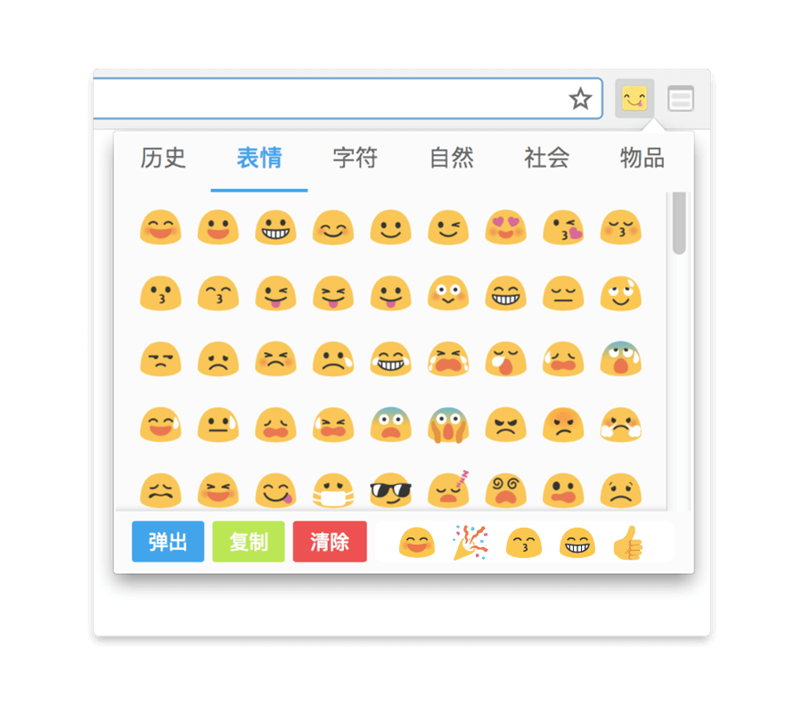
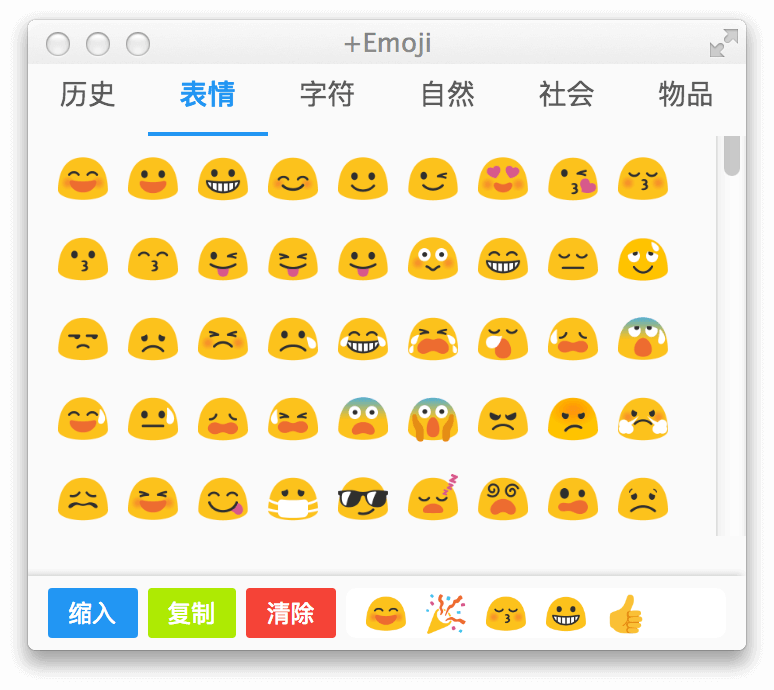
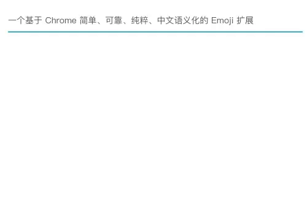
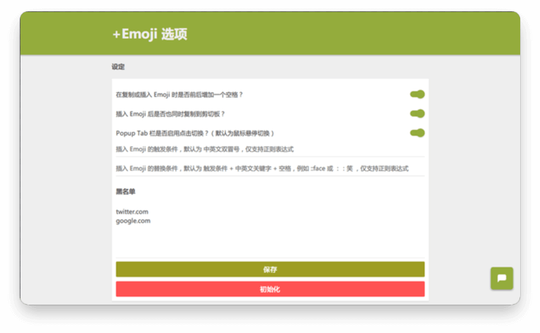

🎉 一个基于 Chrome 简单、可靠、纯粹、中文语义化的 Emoji 扩展 😎
马上使用
本地下载

基于 Google Android 7.0 并使用了最基本的 Emoji 集合
再也不会出现无法显示的情况了。

支持快捷键，可独立为单独窗口。
可复制到剪切板并支持多个复制。

可插入到输入框，支持关键字、全名及模糊查询。
更支持中文语义化查询。

灵活的定制化选项，包括：可定义触发条件、插入规则等。
更支持黑名单并支持 minimatch 匹配方式。